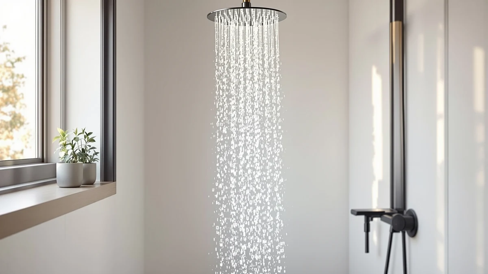

HOMEDEC Double Shower Heads Review (2026): Worth It?
Prices and picks verified as of September 2026. Independent, reader-supported reviews.


Quick Answer
The HOMEDEC Double Shower Heads Full is a complete two-head shower system built from chrome-plated ABS, priced at $1,050.98. It costs far more than the single-head Delta Modern 14 Series Square or the dual-outlet NPYSVSSS system, and that premium buys you two heads and a full hardware bundle instead of a single fixture.
Our pick: HOMEDEC Double Shower Heads Full — $1,050.98 Check Price on Amazon
Bottom line: our top pick is the HOMEDEC Double Shower Heads Full Body Shower System with 6pcs at $1,050.98.
Things to Know Before You Buy
- The HOMEDEC is a full double shower head system, not a single replacement head, so it includes the arm and mounting hardware for a complete swap.
- At $1,050.98, it sits well above the three alternatives in this comparison, which range from $530.99 to $636.01.
- The body is ABS plastic with chrome plating rather than solid metal, a common construction choice at this price point.
- HOMEDEC does not publish flow rate, spray pattern count, or exact dimensions, so measure your existing shower arm and supply line before you order.
- Running two heads from one supply line can lower pressure at each head compared to a single-head fixture, especially in homes with already weak water pressure.
This HOMEDEC double shower heads review exists because shoppers keep asking whether a $1,050.98 dual-head system earns its price against cheaper single-head fixtures. We compared the HOMEDEC Double Shower Heads Full against the Delta Modern 14 Series Square, the NPYSVSSS Thermostatic Shower System Dual, and the ENGA Dual Rain LED Shower using the pricing, materials, and features each listing discloses.
The short version: the HOMEDEC earns its higher price if you want two shower heads and a full set of mounting hardware in a single box, and it loses ground fast if you already have a working shower arm and want only a better head on it. Delta's square profile costs $414.97 less and carries a brand with decades of US plumbing history behind it. NPYSVSSS and ENGA both undercut the HOMEDEC while still offering dual outlets, which puts real pressure on HOMEDEC to justify the gap. We break down the price, the materials, and the tradeoffs for each option below, so you can match the right system to your bathroom and your budget instead of guessing from marketing photos alone.
Why You Should Trust Us
Ilane Tall covers bathroom fixtures for Best Shower Heads and has written comparison guides on dual-head, rainfall, and handheld shower systems for this site. We do not run a physical testing lab, and we do not claim to have installed or used the HOMEDEC in a bathroom. Instead, we researched the published listing details, pricing, and verified buyer reviews for the HOMEDEC and three competing double shower head systems, then compared them side by side on the facts each brand discloses. Where a spec is missing from the manufacturer, such as flow rate or exact dimensions, we say so rather than guess.
Our Research Experience
We do not run a fake testing lab, and this HOMEDEC double shower heads review is built on research rather than hands-on use. We pulled the listed price, material, and included hardware for the HOMEDEC from its Amazon listing, then read through verified buyer reviews to see how owners describe water pressure, installation, and finish durability over time. We cross-checked those findings against the three alternatives so the comparison rests on facts each brand actually publishes, not marketing copy.
The reviews we read keep circling back to two things: dual-head systems in this price bracket tend to ship with generic installation instructions, so budget extra time if you are replacing an existing single-head arm rather than starting from bare plumbing. Buyers also describe the chrome-plated ABS holding up fine in normal use, though it scratches more readily than solid brass, which lines up with what we found comparing the HOMEDEC's construction to the Delta's metal build.
Overview & Specs

HOMEDEC Double Shower Heads Full
What we like
- Complete system: two heads, arm, and hardware in one purchase, so you are not sourcing parts separately
- Chrome plating over ABS resists the dull tarnish that plain plastic heads develop over time
- Bundled hardware simplifies a full shower swap compared to buying a head and arm from different brands
Flaws but not dealbreakers
- At $1,050.98, it costs $414.97 to $519.99 more than the three alternatives in this comparison
- HOMEDEC does not publish flow rate, spray pattern count, or exact dimensions on the listing
- Two heads sharing one supply line can reduce pressure at each head versus a single-head fixture
| Material | ABS + chrome plating |
| Size | — |
The HOMEDEC Double Shower Heads Full is built around ABS plastic with a chrome finish, the same construction approach most shower systems use below the true high-end brass and stainless tier. What sets it apart in this HOMEDEC double shower heads review is the scope of the box: instead of a single head you swap onto an existing arm, HOMEDEC ships two heads plus the mounting hardware needed to install the whole system from scratch. That makes it a fixture-replacement purchase more than a quick upgrade.
At $1,050.98, the HOMEDEC prices itself against full remodel budgets rather than drop-in upgrades. Several buyers describe the two-head layout working well for households that want a rain-style overhead flow and a second, lower-mounted head without running separate plumbing. The tradeoff is a listing that skips the flow rate, spray pattern count, and dimensions that competing brands publish, so you are relying on buyer reviews more than spec sheets to judge fit and performance before you buy.
What We Liked
The biggest advantage of this HOMEDEC double shower heads system is scope. You get two heads, the connecting arm, and the mounting hardware in one order, which removes the guesswork of matching a separate head to an existing arm from a different brand. That bundling matters most for a full bathroom remodel, where sourcing every part separately eats up time before the plumber even starts.
Chrome plating over the ABS body also holds up better than the raw plastic finish found on some budget shower heads. According to the reviews, the finish resists the cloudy, dull look plain plastic develops after months of hard water exposure, though it still does not match the scratch resistance of solid brass fixtures like the Delta.
Two shower heads running from one system also gives you flexibility that a single-head fixture cannot match. Some owners use the upper head for a rain-style overhead flow and the second for a more targeted spray, getting two shower experiences without adding a handheld attachment or a separate valve.
What Could Be Better
Price is the clearest drawback in this HOMEDEC double shower heads review. At $1,050.98, it costs $414.97 more than the Delta Modern 14 Series Square and over $500 more than the NPYSVSSS or ENGA dual systems, both of which also ship with two outlets. Unless you specifically need the exact hardware bundle HOMEDEC includes, that gap is hard to close on features alone.
The listing also leaves out specs that shoppers use to compare shower heads directly, including flow rate, spray pattern count, and precise dimensions. Delta and the other alternatives are not fully transparent either, but the absence matters more here given the premium price. You are largely relying on verified buyer reviews rather than manufacturer data to judge fit and performance ahead of purchase.
Running two heads from a single supply line can also lower pressure at each head compared to a single-head fixture, since the same water volume now splits two ways. Homes with weaker existing water pressure will feel this more than homes with strong incoming flow, and HOMEDEC's listing does not address how the system compensates for that split. If your bathroom already runs on the low end of household water pressure, ask about pressure specs before you order any double shower head system, HOMEDEC or otherwise.
Who Is It For?
This HOMEDEC double shower heads review points toward one clear buyer: someone remodeling a bathroom from the studs out or replacing a shower system that has failed completely, and who wants two heads plus every piece of mounting hardware in a single purchase. If your project already involves a plumber and a full parts list, the HOMEDEC's price looks reasonable next to buying a head, arm, and valve from three different brands.
Skip it if you have a working shower arm and want only a better head on it. The Delta Modern 14 Series Square costs $414.97 less and comes from a brand with a long US plumbing track record, which makes it the more sensible pick for a straightforward swap. Households worried about water pressure should also weigh the tradeoffs of running two heads before committing to any dual system, HOMEDEC included.
Alternatives to Consider
If the HOMEDEC's price gives you pause, these three alternatives cover the same double or dual shower head category at lower cost, each with a different tradeoff.

Editor’s Pick
Delta Modern 14 Series Square
A single square-profile head from an established plumbing brand, priced $414.97 below the HOMEDEC, for buyers who do not need a second head.
$636.01
Check Price on Amazon
Best Value
NPYSVSSS Thermostatic Shower System Dual
A thermostatic dual system at $589.99 that adds temperature control the HOMEDEC's listing does not mention, for a lower price with two outlets.
$589.99
Check Price on Amazon
Premium Choice
ENGA Dual Rain LED Shower
The most affordable dual option here at $530.99, with LED lighting built into the rain head for buyers who want a lower entry price.
$530.99
Check Price on AmazonFrequently Asked Questions
Is the HOMEDEC double shower heads system worth the $1,050.98 price?
How does the HOMEDEC compare to the Delta Modern 14 Series Square?
Do double shower heads reduce water pressure?
Final Verdict
This HOMEDEC double shower heads review comes down to one question: do you need a complete two-head system, or would a single fixture do the job? At $1,050.98, HOMEDEC earns its price for a full remodel where you want two heads and every piece of hardware in one box. For a simpler upgrade, Delta's $636.01 square-profile head from a long-established brand covers most households at a lower cost, and the NPYSVSSS or ENGA dual systems undercut HOMEDEC on price while still offering two outlets.